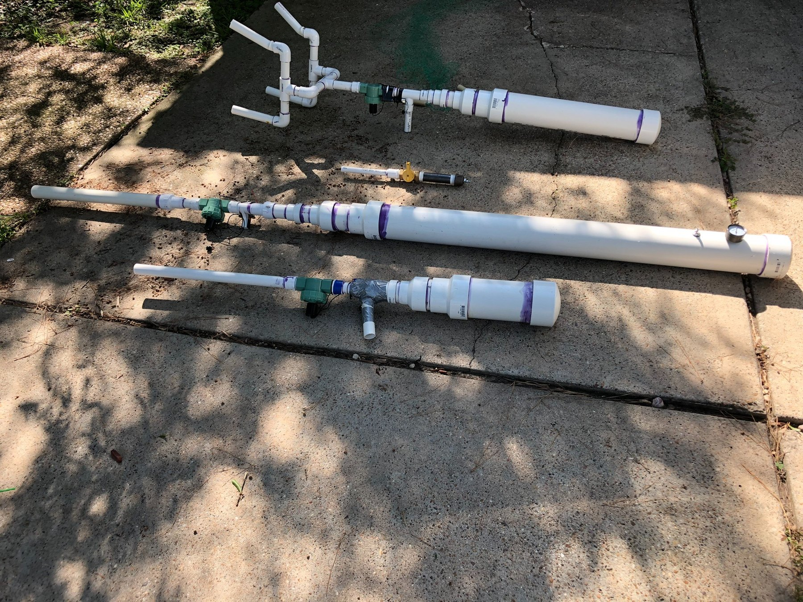

A group of compressed-air prototypes from the series.
Click any thumbnail to view it larger.
Project Overview
A long-running early fabrication series built around iteration.
Rather than treating each version as a separate portfolio project, I group these builds together because they represent the same learning process: designing a concept, fabricating it, testing the physical assembly, and then changing the next version.
The value of the project for my portfolio is the progression in CAD, mechanical packaging, 3D printing, and hands-on fabrication rather than the devices themselves.
What I worked on
- Built a sequence of physical prototypes with different layouts and scales.
- Used PVC fabrication, off-the-shelf hardware, and 3D-printed components.
- Modeled later concepts in SolidWorks before fabrication.
- Iterated the packaging, ergonomics, and support structures from one build to the next.
Video